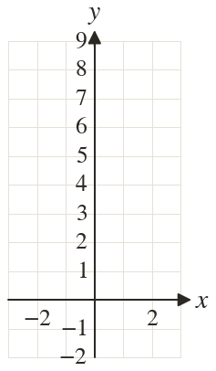
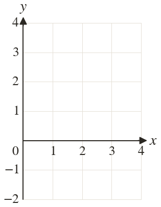
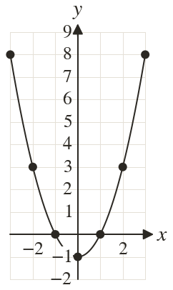
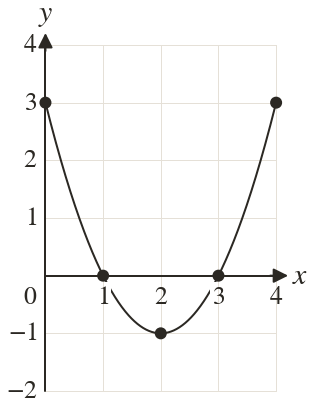

Westonbirt Maths · Quadratics and Their Graphs
Plotting a Quadratic Curve
Name: ______________________ Date: ____________
1
Find on when and
2
Plot your points from question and join them with a smooth curve.
3
Find on when and when
4
Find on when
5
Complete a table of values for for to then plot the curve.
Ext
Kai's table for gives at
Find his mistake and the right value.
Find his mistake and the right value.



